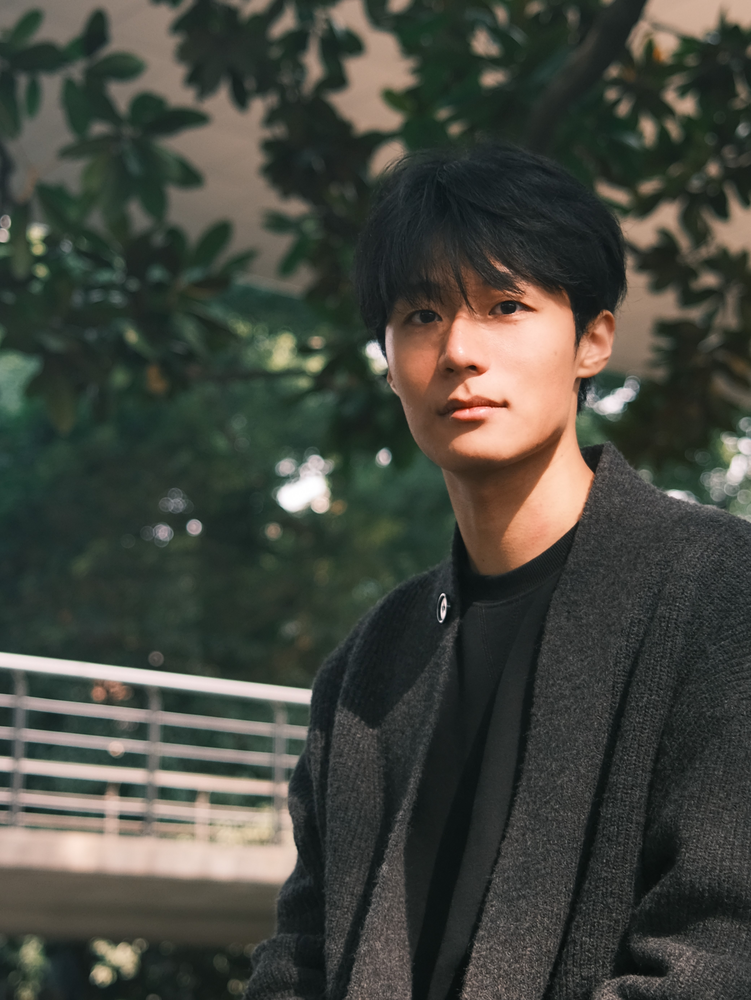

Yuchen Zhang
yuchen.zhang2003@gmail.com Research Intern
Shanghai AI Laboratory |
 |


Biography
I am a 4-th year undergraduate at University of Electronic Science and Technology of China (UESTC) and an incoming PhD student (2025 Fall) at Peking University and Shanghai AI Lab, advised by Prof. Ning Ding and Prof. Bowen Zhou. I am also fortunate to work with Dr. Ganqu Cui and Prof. Yu Cheng.
My research interests lie at Post-training for Large Language Model, especially in building Large Reasoning Model with Reinforcement Learning
Please feel free to contact me if you’re interested in relevant research or would like to discuss potential collaborations!
News
- [12/2024] I am invited to serve as a reviewer for ICML 2025.
- [12/2024] I win The Most Outstanding Students Award of UESTC (The Highest Honor for UESTC students, 10/5500+, 10k RMB).
- [10/2024] I win the the UESTC-LuZhouLaoJiao Scholarship (10K RMB). I also win the first-class scholarship for the third time.
- [10/2024] I am selected as an Outstanding Graduate of UESTC and an Outstanding Graduate of Sichuan Province.
- [09/2024] I am invited to serve as a reviewer for AISTATS 2025.
- [09/2024] Two papers are accepted by NeurIPS 2024.
- [08/2024] I am invited to serve as a reviewer for ICASSP 2025.
- [08/2024] I am invited to serve as a reviewer for ICLR 2025.
- [07/2024] I am joining Shanghai AI Laboratory as a research intern.
- [05/2024] I am invited to serve as a reviewer for NeurIPS 2024.
- [04/2024] I am invited to serve as a reviewer for ACM MM 2024.
- [05/2024] GEOM, the first lossless graph condensation approach is accepted by ICML 2024!
- [05/2024] Our workshop: The First Dataset Distillation Challenge got accepted at ECCV 2024 as a half-day workshop!
- [10/2023] I win the UESTC-Huameng Scholarship (10k RMB). I also win the first-class scholarship for the second time.
- [09/2023] One paper was accepted by NeurIPS 2023.
Publications [Google Scholar]
-
Navigating Complexity: Toward Lossless Graph Condensation via Expanding Window Matching
Yuchen Zhang, Tianle Zhang, Kai Wang, Ziyao Guo, Yuxuan Liang, Xavier Bresson, Wei Jin, Yang You
ICML 2024 -
Enhancing Knowledge Transfer for Task Incremental
Learning with Data-free Subnetwork
Qiang Gao, Xiaojun Shan, Yuchen Zhang, Fan Zhou
NeurIPS 2023 -
GDeR: Safeguarding Efficiency, Balancing, and Robustness via Prototypical Graph Pruning
Guibin Zhang, Haonan Dong, Yuchen Zhang, Zhixun Li, Dingshuo Chen, Kai Wang, Tianlong Chen, Yuxuan Liang, Dawei Cheng, Kun Wang
NeurIPS 2024 -
Rethinking Human Evaluation Protocol for Text-to-Video Models: Enhancing Reliability, Reproducibility, and Practicality
Tianle Zhang, Langtian Ma, Yuchen Yan, Yuchen Zhang, Kai Wang, Yue Yang, Ziyao Guo, Wenqi Shao, Yang You, Yu Qiao, Ping Luo, Kaipeng Zhang
NeurIPS 2024
Honors & Awards
- The Most Outstanding Students Award of UESTC (Top 0.2%, 10k RMB)
- UESTC-Huameng Scholarship (Top 4%, 10k RMB)
- UESTC-LuZhouLaoJiao Scholarship (Top 4%, 10k RMB)
- First-class Scholarship, 2022, 2023, 2024
Invited Talks
- [06/2024] Lossless Graph Condensation. @ Techbeat